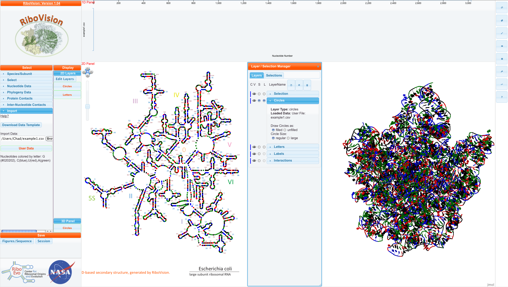

What we call "manual coloring" is that the user (you) have already decided exactly which color you would like each nucleotide to be. You may have decided this "by hand", or you may have adapted your computer programs to output to our input format. Using the colors "#000000" or "#858585" may result in unintended effects. All other of the 16+ million colors should work well. Note: We haven't yet provided an easy way to change the background. So you probably want to choose colors that show up well against a white background.
For this example, we have decided to color every nucleotide according to its name. G's are colored almost black (#020202), C's are colored blue, A's are colored green, and U's are colored red. To do this, we put these colors in the ColorCol. We will also put the nucleotide letter itself into DataCol, so we can see where that information goes. In addition, we will set a coloumn called "DataDescription". In the first row, we write a description of the data. It can be as detailed as you like.
resNum, DataCol, ColorCol, DataDescription
23S:1, G, #020202, "Nucleotides colored by letter:..."
23S:3, U, red
23S:5, A, green
23S:8, C, blue
Here is the csv file for this example. Below, is this file mapped onto E. coli LSU 3D-based Structure. 
You can see our DataDescription in the "Main Menu" and see that example1.csv has been loaded into the Circles layer as filled and regular circles. NavLine has no data, because we didn't put numerical data into DataCol.